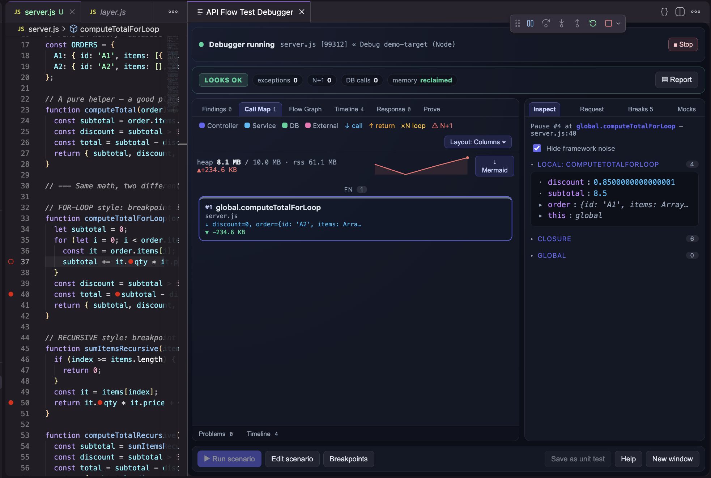
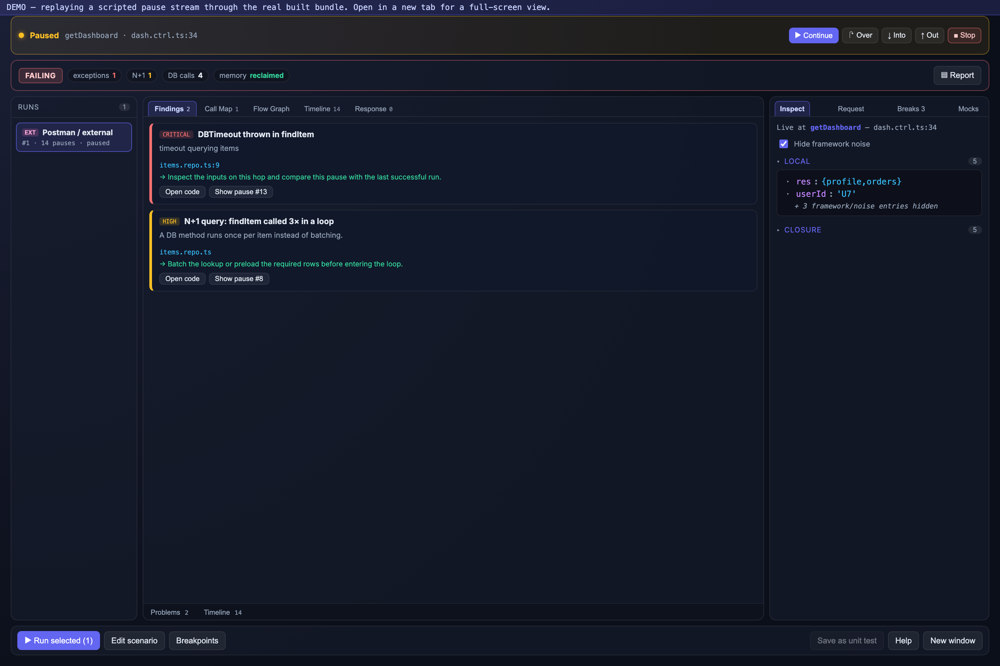
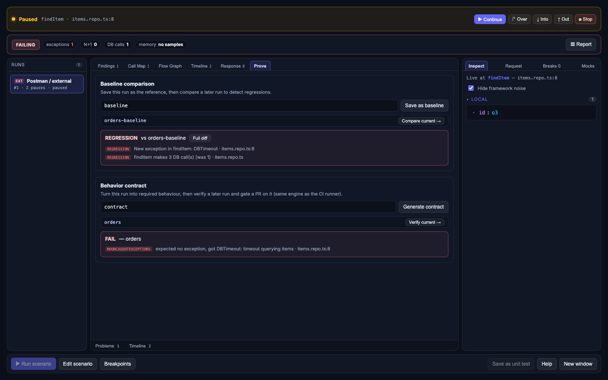
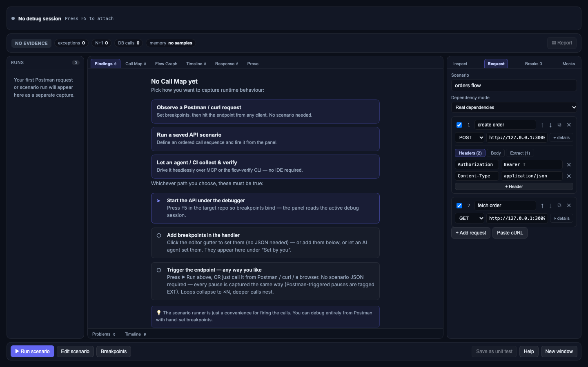
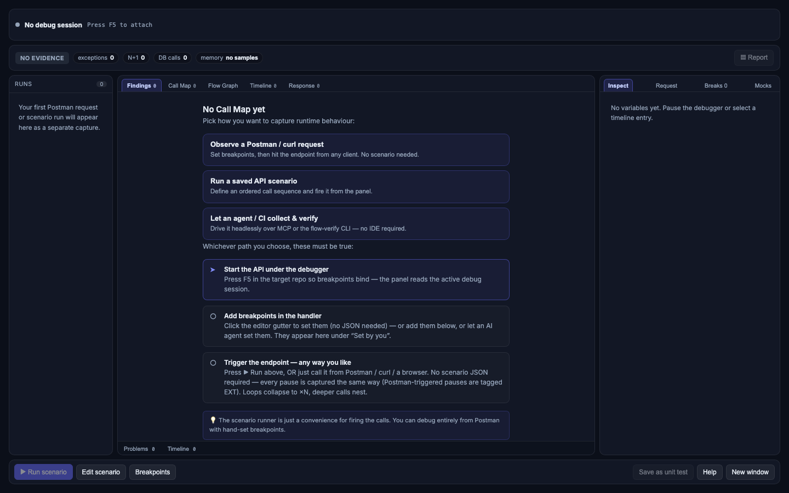

root@localhost:~# status: 31 mcp tools loaded, debugger attached
An AI agent just rewrote your handler. The diff looks fine. Does the code actually work? Tracegrab sets real breakpoints in your real process, fires a real request, and hands the agent back a diagnosis — not a stack trace it has to guess from.
$ auto_debug --scenario checkout.flow.json → breakpoints set: 3 calls fired: 2 paused: 4 times verdict: FAILING — exception thrown on this path ✗ critical DBTimeout thrown in findItem items.repo.ts:9 ⚠ high N+1: findItem called 3× in a loop ⚠ high token cleared (abc123 → '') in getOrders ▲ medium heap +1.0MB, never reclaimed callPath: CONTROLLER getDashboard SERVICE getOrders DB findItem
// the actual problem
An LLM reads your source and reasons about what the code should do. It has no eyes on what the code actually does once a request hits a real DB, a real cache, a real race condition. That gap is where "looks right, ships broken" comes from.
Real breakpoints in vscode.debug, on your actual process. Not a sandboxed re-execution, not a mocked call graph — the live thing, paused mid-flight.
Output is a typed verdict + ranked findings an agent can branch on programmatically. No regex-ing a console dump to find the bug.
31 MCP tools over stdio. No copy-pasting logs back and forth between your terminal and a chat window.
save_trace → ship the fix → compare_traces. The agent proves REGRESSION / CHANGED / EQUIVALENT instead of asserting "should be fixed now."
// mcp://tracegrab
Any MCP client — Cursor, Claude Code, Kiro, your own agent loop — gets the same 31-tool surface. Register once:
{ "mcpServers": { "tracegrab": {
"command": "node",
"args": ["/ABS/PATH/tracegrab/mcp/flow-mcp.mjs"],
"env": { "FLOW_WORKSPACE": "/ABS/PATH/to/target/repo" }
} } }
One call: set breakpoints, drive the scenario, build the call map, run every detector, return a verdict. The whole investigation, one round trip.
Granular control when auto isn't enough: read a live pause, inspect scope, mutate a variable to force a branch, step, continue. Read → decide → act.
No VS Code, no panel — the same steer loop runs in CI, a container, or a pure-agent box. Tested with Node and Python (debugpy) only; other languages are unverified. more →
Baseline a run, diff a later one — REGRESSION / CHANGED / EQUIVALENT — plus behavior contracts an agent (or CI) can gate on.
Structured runtime truth: nested calls, boundary data, heap deltas, variable values, Mermaid export. Something to reason over, not a screenshot.
The agent probes what's possible before committing. Every live mutation is logged. Secrets redacted, propose-then-confirm by default.
Ships with an AGENTS.md the agent reads unprompted — it tells the agent when to reach for this (a bug report, a ticket, "why does endpoint X do Y") and how to turn that into breakpoints + a run. Full spec: docs/AGENT_AUTOMATION.md.
// receipts
Captured from the real built webview — verdict first, evidence around it.

Source + breakpoints on the left; the live panel on the right — verdict, call map, memory, and the paused scope the agent reads over MCP.

Ranked findings, nested call tree, run history, live inspector — in one view.

Baseline vs. later run: REGRESSION / CHANGED / EQUIVALENT, plus a contract check.

Method, URL, headers, body, response-value extraction. Reorder, duplicate.

Observe a Postman request, run a scenario, or let an agent/CI collect — your pick.
// not another debugger
| generic dap-over-mcp | tracegrab | |
|---|---|---|
| model | step / inspect / evaluate | request-shaped call map + diagnosis |
| output | raw frames & variables | verdict + ranked findings |
| http flow aware | — | ✓ controller→service→db |
| n+1 / silent-clear / heap | — | ✓ auto-detected |
| mock the db for a run | — | ✓ boundary injection |
| headless (no ide) | — | ✓ ci-safe |
// get running
Not on the VS Code Marketplace yet — the extension ships as a built .vsix
you grab from the repo and install directly. Works in VS Code, Cursor, and Windsurf (all three
read the same .vsix format).
GitHub repo: github.com/sinhaKAN-ra/tracegrab/releases once a release is cut, or build your own .vsix from main with the commands below — same artifact either way.
Node.js 18+, VS Code / Cursor / Windsurf, and the vsce packager (pulled in automatically via npx below — no global install).
$ git clone https://github.com/sinhaKAN-ra/tracegrab && cd tracegrab $ npm install $ npm run build # webview + host $ npx vsce package # → tracegrab-0.0.1.vsix $ code --install-extension tracegrab-0.0.1.vsix # or: cursor --install-extension ...
Already have the .vsix from a release? Skip straight to the last line, or use Extensions panel → ··· → Install from VSIX if you'd rather click than type.
// first run
New here? Read the one concept below first — it's the thing that trips everyone up — then follow the five steps against the bundled demo app.
// the one concept to get first: two ways to drive
| panel (manual) | ai agent (mcp) | |
|---|---|---|
| who drives | you, clicking in the panel | the agent, via MCP tools |
| set breakpoints | click the editor gutter | ask it ("break at the recursion line") |
| fire the request | run curl yourself | ask it to fire the call |
| step / inspect | buttons in the panel | it steps and reports back |
These aren't two installs — it's the same debug session. The agent can take over a session you started, and you watch it live in the panel at the same time. A first-time user won't know this, so start with the panel path, then hand it to the agent in step 5.
cd examples/demo-target && npm install — Node's debugger is built in, nothing else needed. For the Python demo: debugpy must live in the interpreter your launch config uses; on Homebrew/PEP 668 Python make a venv — python3 -m venv .venv then .venv/bin/python -m pip install debugpy — and point the Python config at .venv/bin/python.examples/demo-target, then Command Palette (Cmd+Shift+P) → Tracegrab: Start Debugging (launch + panel) → pick Debug demo-target (Node). Do not run node server.js in a terminal, don't F5 a non-Tracegrab config, and don't use plain Tracegrab: Start (that opens the panel only, it doesn't launch the debugger). Only this command creates a session Tracegrab owns — start it any other way and the panel can look "running" while Tracegrab and the agent can't actually see or drive it.Debugger attached and demo-target listening on http://127.0.0.1:3000, the status bar turns orange, and the panel opens. The panel is empty until a request pauses — that's expected, not a bug.server.js — good lines: 37 (for-loop body), 50 (recursive self-call), 40 (discount branch). Then curl http://127.0.0.1:3000/orders/A1/loop. The curl hanging is the success signal — it's paused at your breakpoint and the call map + inspector fill in. Continue in the panel to finish the request. Try /orders/A1/recursive (recursion as a ↻ ×N node), /orders/A2/loop (empty items, total 0), or /orders/ZZZ/loop (404, no pause — the guard short-circuits).// if something's off (the exact traps we hit)
3000 (or 3001 for Python). Stop it first.debugpy isn't in the interpreter the config launched — install it in that exact environment, or point the config at your .venv.// no ide, no panel
The panel and MCP are two halves of the same tool. In the normal flow the panel (the extension's UI) is what you watch, and MCP is how the agent drives — together they give you the automation. In headless mode there is no panel: no VS Code, no window to look at. The agent still sets breakpoints, fires calls, reads pauses, and returns a verdict entirely over MCP — which is what makes it work in CI, a container, or a pure-agent box.
With the IDE, you see the live call map and inspector while the agent (or you) drives. Headless keeps the hands and drops the eyes — same session model, no UI.
start_headless_session() launches the target under the debugger with no F5 and no panel. The rest of the MCP loop — breakpoints, scenario, pauses, verdict — is identical to the IDE path.
Verified against Node and Python (debugpy) only. Other languages are not verified — they may work via their DAP adapter, but we haven't tested them and don't claim support.
// hack on it
VS Code extension host (src/, Node/TS) + a React webview
(webview-ui/) + a zero-dep MCP server (mcp/). Full map in
CONTRIBUTING.md.
$ git clone https://github.com/sinhaKAN-ra/tracegrab && cd tracegrab $ npm install $ npm run build # webview (Vite) then host (tsc) $ npm test # host-logic + call-tree + safety suites
Gates a PR must pass green:
npm run compile — host TypeScript, 0 errors.npm run build --prefix webview-ui — webview build, 0 errors.cd webview-ui && npx oxlint src — 0 warnings, 0 errors.npm run lint:boundaries — public core stays self-contained and strategy-free.One logical change per PR. Never commit secrets, .vsix artifacts, or .flow-debugger/ runtime output. Found a bug or want to propose a feature? Open an issue, or email nomore.report@gmail.com directly.